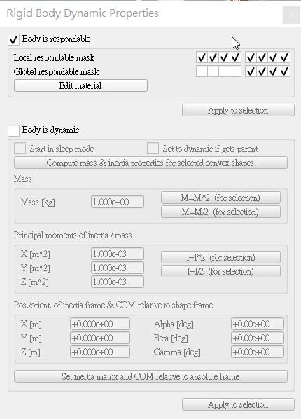
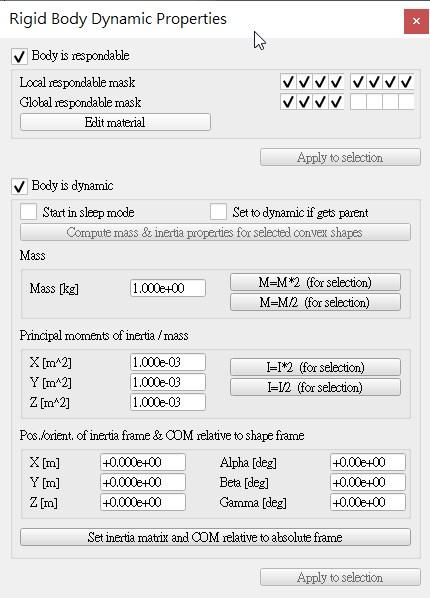
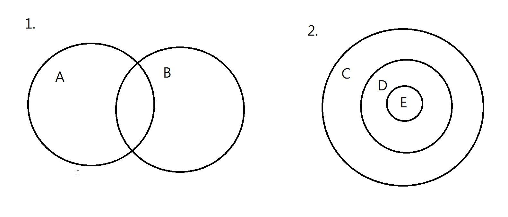
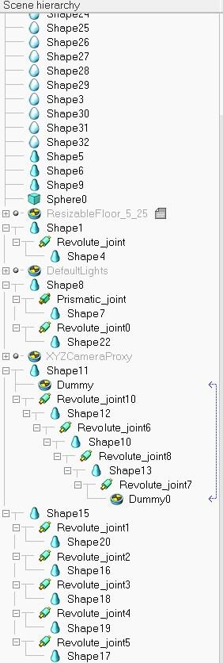

影音教學 <<
Previous Next >> 網頁建立
碰撞
當Body is respondable開啟時，物體會開啟碰撞響應
當格子與格子有交集時，則物體會產生碰撞
若兩者沒有交集，則不會碰到


Global respondable mask與 Local respondable mask的差異
當物體沒有在同一個父集合下，global respondable mask全部關閉則不與場景中的物件產生碰撞。
主要是因為是Local respondable mask是處理有相互關係物件的碰撞，而Global respondable的碰撞是對於場景的所有objects碰撞的控制。若物件是互相接合的，當產生干涉時可利用Local respondable mask採取空集合的方式消除，並且在global respondable mask開啟的請況下，物體只會取消父集合下互相有關係之物件的碰撞，其餘如球體等等依然可以接觸到，而不會直接穿過!
1.的情況為AB有交集，而2.的情況C為D與E的父集合，三者關係為層遞的結構

此處即常見的父集合形式

影音教學 <<
Previous Next >> 網頁建立